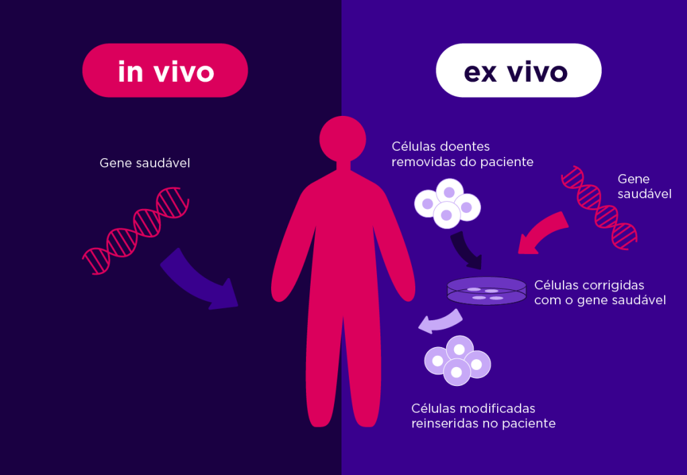
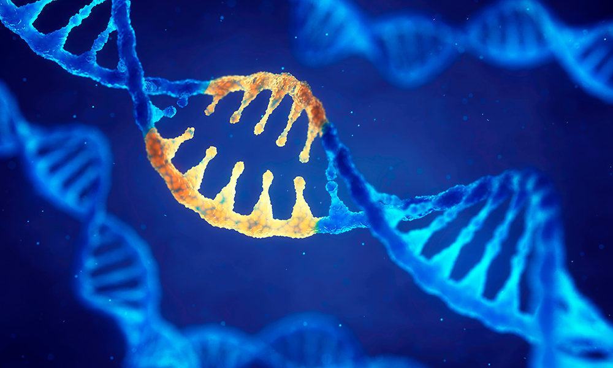
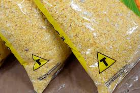
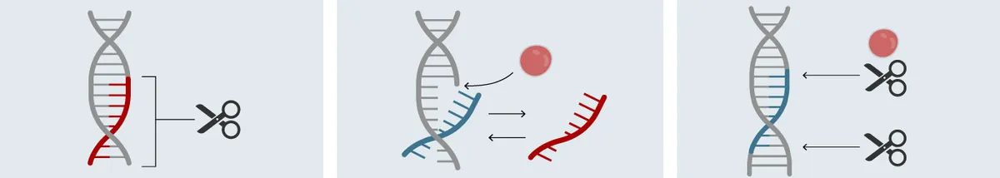

Aplicações da Terapia gênica e a técnica CRISPR:
A Terapia gênica, aliada à Nanotecnologia, é utilizada no tratamento de diversas doenças hereditárias, multifatoriais e raras.
Existem 2 técnicas principais na modificação de genes. A técnica in vivo transfere o DNA diretamente na célula. Já a ex vivo transfere o DNA para células isoladas, que são retiradas do paciente, e modificadas. Esse segundo método é um pouco mais demorado, porém, é mais fácil controlar as modificações da célula antes de reintroduzi-la no paciente.
Tipos de doenças tratadas com Terapia Gênica:

Doenças raras e hereditárias: Geralmente são causadas pela mutação de um único gene, o que aumenta a chance de cura através da terapia gênica.
Um dos exemplos é a hemofilia, onde o gene é introduzido em uma célula alvo dos pacientes, no caso as células do fígado, através de um vetor viral modificado, o vírus adeno-associado.
Doenças multifatoriais: Elas podem surgir devido a mutações de diversos genes, estresse ou causas desconhecidas. O uso da Terapia Gênica visa diminuir ou evitar o avanço de doenças graves e neurodegenerativas. O tratamento pode focar em fatores genéticos de pré-disposição ou gravidade, na possível mudança de mecanismos fundamentais ou na estrutura das células, dos órgãos ou sistemas atingidos.
Além dos exemplos listados acima, a Terapia Gênica também pode ser utilizada no tratamento do Câncer, em doenças neurológicas como a Esclerose múltipla e, também, em doenças sensoriais como a Distrofia da Retina.
Terapia Gênica nos Alimentos:
Ao longo dos anos, o setor agrícola tem se beneficiado com a produção de alimentos transgênicos. Esses produtos utilizam a Terapia Gênica, pois têm seu DNA (material genético) modificado pela inserção de um ou mais genes oriundos de outro organismo. Essa modificação faz com que os alimentos transgênicos produzam sementes com alta qualidade nutritiva e maior resistência a pragas e doenças, o que faz com que a produtividade seja maior em relação às sementes orgânicas. Esse fator diminui a necessidade de aplicação de defensivos agrícolas ao longo do ciclo da cultura.
Técnica CRISPR:
A CRISPR (Conjunto de Repetições Palindrômicas Curtas Regularmente Espaçadas) é uma técnica da biotecnologia que utiliza a edição genética no tratamento de doenças, e na criação de novas espécies de vegetais e animais. A edição genética consiste na remoção ou substituição de um fragmento de DNA ou RNA defeituoso, em uma célula.
A CRISPR funciona exatamente assim. Sua região atua como um sistema de defesa contra as bactérias, onde partes de DNA de vírus invasores são inseridos entre as repetições. A partir disso, as bactérias produzem enzimas e a (Cas9) é a mais conhecida. Essas enzimas atuam como tesouras moleculares, carregando as “memórias” do vírus. Assim, se um novo invasor tiver sequências idênticas em alguma das “memórias”, o material genético será cortado pela enzima.
Assista o vídeo abaixo para entender um pouco mais sobre as aplicações da Terapia gênica e a Técnica CRISPR:
Os dados desse site, foram obtidos através de pesquisa, utilizando as seguintes fontes: